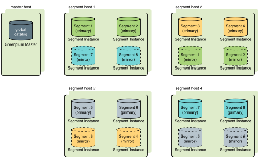
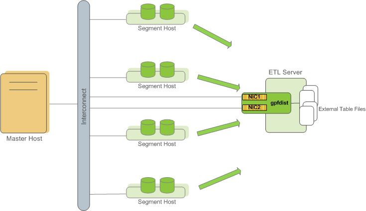
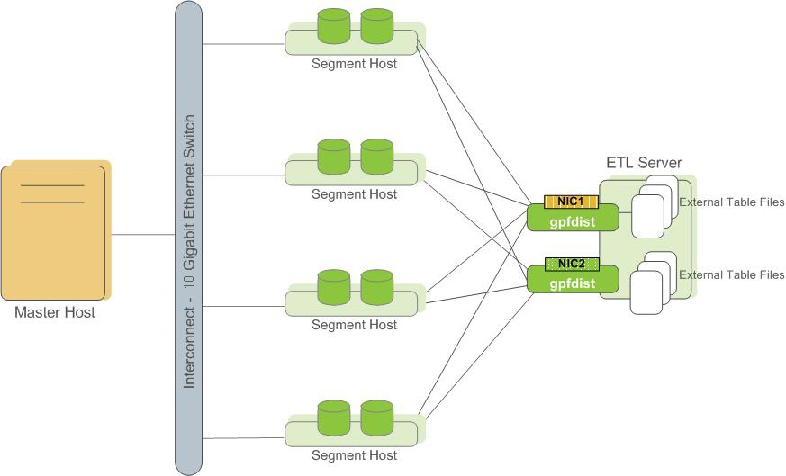

About the SynxDB Architecture
SynxDB is a massively parallel processing (MPP) database server with an architecture specially designed to manage large-scale analytic data warehouses and business intelligence workloads.
MPP (also known as a shared nothing architecture) refers to systems with two or more processors that cooperate to carry out an operation, each processor with its own memory, operating system and disks. SynxDB uses this high-performance system architecture to distribute the load of multi-terabyte data warehouses, and can use all of a system’s resources in parallel to process a query.
SynxDB is based on PostgreSQL open-source technology. It is essentially several PostgreSQL disk-oriented database instances acting together as one cohesive database management system (DBMS). It is based on PostgreSQL 9.4, and in most cases is very similar to PostgreSQL with regard to SQL support, features, configuration options, and end-user functionality. Database users interact with SynxDB as they would with a regular PostgreSQL DBMS.
SynxDB can use the append-optimized (AO) storage format for bulk loading and reading of data, and provides performance advantages over HEAP tables. Append-optimized storage provides checksums for data protection, compression and row/column orientation. Both row-oriented or column-oriented append-optimized tables can be compressed.
The main differences between SynxDB and PostgreSQL are as follows:
- GPORCA is leveraged for query planning, in addition to the Postgres Planner.
- SynxDB can use append-optimized storage.
- SynxDB has the option to use column storage, data that is logically organized as a table, using rows and columns that are physically stored in a column-oriented format, rather than as rows. Column storage can only be used with append-optimized tables. Column storage is compressible. It also can provide performance improvements as you only need to return the columns of interest to you. All compression algorithms can be used with either row or column-oriented tables, but Run-Length Encoded (RLE) compression can only be used with column-oriented tables. SynxDB provides compression on all Append-Optimized tables that use column storage.
The internals of PostgreSQL have been modified or supplemented to support the parallel structure of SynxDB. For example, the system catalog, optimizer, query executor, and transaction manager components have been modified and enhanced to be able to run queries simultaneously across all of the parallel PostgreSQL database instances. The SynxDB interconnect (the networking layer) enables communication between the distinct PostgreSQL instances and allows the system to behave as one logical database.
SynxDB also can use declarative partitions and sub-partitions to implicitly generate partition constraints.
SynxDB also includes features designed to optimize PostgreSQL for business intelligence (BI) workloads. For example, SynxDB has added parallel data loading (external tables), resource management, query optimizations, and storage enhancements, which are not found in standard PostgreSQL. Many features and optimizations developed by SynxDB make their way into the PostgreSQL community. For example, table partitioning is a feature first developed by SynxDB, and it is now in standard PostgreSQL.
SynxDB queries use a Volcano-style query engine model, where the execution engine takes an execution plan and uses it to generate a tree of physical operators, evaluates tables through physical operators, and delivers results in a query response.
SynxDB stores and processes large amounts of data by distributing the data and processing workload across several servers or hosts. SynxDB is an array of individual databases based upon PostgreSQL 9.4 working together to present a single database image. The master is the entry point to the SynxDB system. It is the database instance to which clients connect and submit SQL statements. The master coordinates its work with the other database instances in the system, called segments, which store and process the data.
The following topics describe the components that make up a SynxDB system and how they work together.
- About the SynxDB Master
- About the SynxDB Segments
- About the SynxDB Interconnect
- About ETL Hosts for Data Loading
About the SynxDB Master
The SynxDB master is the entry to the SynxDB system, accepting client connections and SQL queries, and distributing work to the segment instances.
SynxDB end-users interact with SynxDB (through the master) as they would with a typical PostgreSQL database. They connect to the database using client programs such as psql or application programming interfaces (APIs) such as JDBC, ODBC or libpq (the PostgreSQL C API).
The master is where the global system catalog resides. The global system catalog is the set of system tables that contain metadata about the SynxDB system itself. The master does not contain any user data; data resides only on the segments. The master authenticates client connections, processes incoming SQL commands, distributes workloads among segments, coordinates the results returned by each segment, and presents the final results to the client program.
SynxDB uses Write-Ahead Logging (WAL) for master/standby master mirroring. In WAL-based logging, all modifications are written to the log before being applied, to ensure data integrity for any in-process operations.
Master Redundancy
You may optionally deploy a backup or mirror of the master instance. A backup master host serves as a warm standby if the primary master host becomes nonoperational. You can deploy the standby master on a designated redundant master host or on one of the segment hosts.
The standby master is kept up to date by a transaction log replication process, which runs on the standby master host and synchronizes the data between the primary and standby master hosts. If the primary master fails, the log replication process shuts down, and an administrator can activate the standby master in its place. When the standby master is active, the replicated logs are used to reconstruct the state of the master host at the time of the last successfully committed transaction.
Since the master does not contain any user data, only the system catalog tables need to be synchronized between the primary and backup copies. When these tables are updated, changes automatically copy over to the standby master so it is always synchronized with the primary.

About the SynxDB Segments
SynxDB segment instances are independent PostgreSQL databases that each store a portion of the data and perform the majority of query processing.
When a user connects to the database via the SynxDB master and issues a query, processes are created in each segment database to handle the work of that query. For more information about query processes, see About SynxDB Query Processing.
User-defined tables and their indexes are distributed across the available segments in a SynxDB system; each segment contains a distinct portion of data. The database server processes that serve segment data run under the corresponding segment instances. Users interact with segments in a SynxDB system through the master.
A server that runs a segment instance is called a segment host. A segment host typically runs from two to eight SynxDB segments, depending on the CPU cores, RAM, storage, network interfaces, and workloads. Segment hosts are expected to be identically configured. The key to obtaining the best performance from SynxDB is to distribute data and workloads evenly across a large number of equally capable segments so that all segments begin working on a task simultaneously and complete their work at the same time.
Segment Redundancy
When you deploy your SynxDB system, you have the option to configure mirror segments. Mirror segments allow database queries to fail over to a backup segment if the primary segment becomes unavailable. Mirroring is a requirement for production SynxDB systems.
A mirror segment must always reside on a different host than its primary segment. Mirror segments can be arranged across the hosts in the system in one of two standard configurations, or in a custom configuration you design. The default configuration, called group mirroring, places the mirror segments for all primary segments on one other host. Another option, called spread mirroring, spreads mirrors for each host’s primary segments over the remaining hosts. Spread mirroring requires that there be more hosts in the system than there are primary segments on the host. On hosts with multiple network interfaces, the primary and mirror segments are distributed equally among the interfaces. This figure shows how table data is distributed across the segments when the default group mirroring option is configured:

Segment Failover and Recovery
When mirroring is enabled in a SynxDB system, the system automatically fails over to the mirror copy if a primary copy becomes unavailable. A SynxDB system can remain operational if a segment instance or host goes down only if all portions of data are available on the remaining active segments.
If the master cannot connect to a segment instance, it marks that segment instance as invalid in the SynxDB system catalog. The segment instance remains invalid and out of operation until an administrator brings that segment back online. An administrator can recover a failed segment while the system is up and running. The recovery process copies over only the changes that were missed while the segment was nonoperational.
If you do not have mirroring enabled and a segment becomes invalid, the system automatically shuts down. An administrator must recover all failed segments before operations can continue.
Example Segment Host Hardware Stack
Regardless of the hardware platform you choose, a production SynxDB processing node (a segment host) is typically configured as described in this section.
The segment hosts do the majority of database processing, so the segment host servers are configured in order to achieve the best performance possible from your SynxDB system. SynxDB’s performance will be as fast as the slowest segment server in the array. Therefore, it is important to ensure that the underlying hardware and operating systems that are running SynxDB are all running at their optimal performance level. It is also advised that all segment hosts in a SynxDB array have identical hardware resources and configurations.
Segment hosts should also be dedicated to SynxDB operations only. To get the best query performance, you do not want SynxDB competing with other applications for machine or network resources.
The following diagram shows an example SynxDB segment host hardware stack. The number of effective CPUs on a host is the basis for determining how many primary SynxDB segment instances to deploy per segment host. This example shows a host with two effective CPUs (one dual-core CPU). Note that there is one primary segment instance (or primary/mirror pair if using mirroring) per CPU core.
Example Segment Disk Layout
Each CPU is typically mapped to a logical disk. A logical disk consists of one primary file system (and optionally a mirror file system) accessing a pool of physical disks through an I/O channel or disk controller. The logical disk and file system are provided by the operating system. Most operating systems provide the ability for a logical disk drive to use groups of physical disks arranged in RAID arrays.
Depending on the hardware platform you choose, different RAID configurations offer different performance and capacity levels. SynxDB supports and certifies a number of reference hardware platforms and operating systems. Check with your sales account representative for the recommended configuration on your chosen platform.
About the SynxDB Interconnect
The interconnect is the networking layer of the SynxDB architecture.
The interconnect refers to the inter-process communication between segments and the network infrastructure on which this communication relies. The SynxDB interconnect uses a standard Ethernet switching fabric. For performance reasons, a 10-Gigabit system, or faster, is recommended.
By default, the interconnect uses User Datagram Protocol with flow control (UDPIFC) for interconnect traffic to send messages over the network. The SynxDB software performs packet verification beyond what is provided by UDP. This means the reliability is equivalent to Transmission Control Protocol (TCP), and the performance and scalability exceeds TCP. If the interconnect is changed to TCP, SynxDB has a scalability limit of 1000 segment instances. With UDPIFC as the default protocol for the interconnect, this limit is not applicable.
Interconnect Redundancy
A highly available interconnect can be achieved by deploying dual 10 Gigabit Ethernet switches on your network, and redundant 10 Gigabit connections to the SynxDB master and segment host servers.
Network Interface Configuration
A segment host typically has multiple network interfaces designated to SynxDB interconnect traffic. The master host typically has additional external network interfaces in addition to the interfaces used for interconnect traffic.
Depending on the number of interfaces available, you will want to distribute interconnect network traffic across the number of available interfaces. This is done by assigning segment instances to a particular network interface and ensuring that the primary segments are evenly balanced over the number of available interfaces.
This is done by creating separate host address names for each network interface. For example, if a host has four network interfaces, then it would have four corresponding host addresses, each of which maps to one or more primary segment instances. The /etc/hosts file should be configured to contain not only the host name of each machine, but also all interface host addresses for all of the SynxDB hosts (master, standby master, segments, and ETL hosts).
With this configuration, the operating system automatically selects the best path to the destination. SynxDB automatically balances the network destinations to maximize parallelism.
Switch Configuration
When using multiple 10 Gigabit Ethernet switches within your SynxDB array, evenly divide the number of subnets between each switch. In this example configuration, if we had two switches, NICs 1 and 2 on each host would use switch 1 and NICs 3 and 4 on each host would use switch 2. For the master host, the host name bound to NIC 1 (and therefore using switch 1) is the effective master host name for the array. Therefore, if deploying a warm standby master for redundancy purposes, the standby master should map to a NIC that uses a different switch than the primary master.
About ETL Hosts for Data Loading
SynxDB supports fast, parallel data loading with its external tables feature. By using external tables in conjunction with SynxDB’s parallel file server (gpfdist), administrators can achieve maximum parallelism and load bandwidth from their SynxDB system. Many production systems deploy designated ETL servers for data loading purposes. These machines run the SynxDB parallel file server (gpfdist), but not SynxDB instances.
One advantage of using the gpfdist file server program is that it ensures that all of the segments in your SynxDB system are fully utilized when reading from external table data files.
The gpfdist program can serve data to the segment instances at an average rate of about 350 MB/s for delimited text formatted files and 200 MB/s for CSV formatted files. Therefore, you should consider the following options when running gpfdist in order to maximize the network bandwidth of your ETL systems:
- If your ETL machine is configured with multiple network interface cards (NICs) as described in Network Interface Configuration, run one instance of
gpfdiston your ETL host and then define your external table definition so that the host name of each NIC is declared in theLOCATIONclause (seeCREATE EXTERNAL TABLEin the SynxDB Reference Guide). This allows network traffic between your SynxDB segment hosts and your ETL host to use all NICs simultaneously.

- Run multiple
gpfdistinstances on your ETL host and divide your external data files equally between each instance. For example, if you have an ETL system with two network interface cards (NICs), then you could run twogpfdistinstances on that machine to maximize your load performance. You would then divide the external table data files evenly between the twogpfdistprograms.
